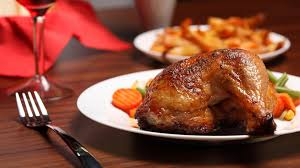

My Restraunt
Restaurants have a deeply rich international history, representing the shifts of dining culture and changes in taste preference over time.They're also the place we go to for a quick lunch on the go or a celebration of a family member's high school graduation. For the longest time, restaurants will be part of the North American social experience.
-
Succotash
Succotash is a culinary dish consisting primarily of sweet corn with lima beans or other shell beans. Other ingredients may be added including corned beef, potatoes, turnips, salt pork, tomatoes, multi-colored sweet peppers, and okra.
-

Sauerbraten
Sauerbraten is a traditional German roast of heavily marinated meat. It is regarded as a national dish of Germany, and is frequently served in German-style restaurants internationally. It can be prepared from a variety of meats, but also from venison, lamb and mutton, pork and horse
-

Biryani
Biryani is a mixed rice dish originating among the Muslims of the Indian subcontinent. It is made with Indian spices, rice, and meat, and sometimes, in addition, eggs and/or vegetables such as potatoes in certain regional varieties. It may sometimes also include carrots.
-
Irish Stew
Irish stew is a lamb or mutton and root vegetable stew native to Ireland. As in all traditional folk dishes, the exact recipe is not consistent from time to time, or place to place. Basic ingredients include lamb, or mutton, as well as potatoes, onions, and parsley. It may sometimes also include carrots.
-

Lasagna
Flat pasta randomly distributed in layers with ground beef (or other meats), cheese, and tomato sauce, and baked in an oven. Garlic and oregano are added for flavor.The combination of so many herbs and spices in each dish produces complex flavors that somehow come together like orchestral music.